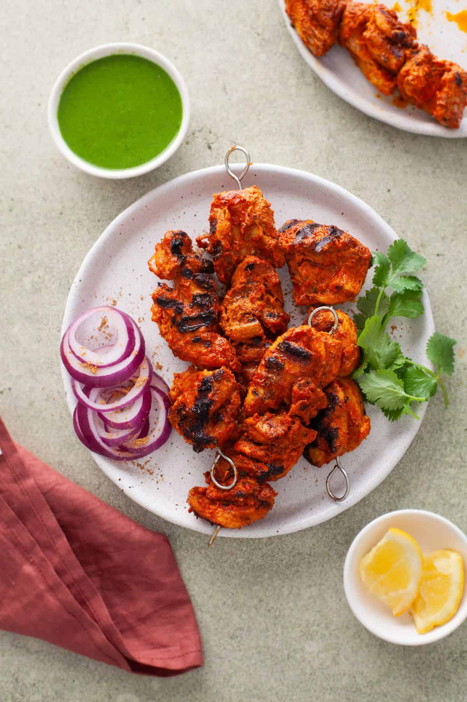

Chicken Tikka Recipes

Description
Chicken Tikka is a popular Indian dish made by marinating chunks of chicken in a mixture of yogurt and aromatic spices,
then grilling or baking them until perfectly cooked. The result is tender, juicy chicken with a smoky, flavorful crust.
This dish is often served as an appetizer or as part of a main meal with naan, rice, or a fresh salad. The marinade can
be customized to be mild or spicy, making it a versatile favorite for both everyday meals and special occasions.
Ingredients
- 500g boneless chicken, cut into cubes
- 1/2 cup yogurt
- 1 tablespoon ginger-garlic paste
- 1 tablespoon lemon juice
- 1 teaspoon red chili powder
- 1 teaspoon turmeric powder
- 1 teaspoon garam masala
- 1 teaspoon cumin powder
- 1 teaspoon coriander powder
- 1 tablespoon oil
- Salt to taste
- Fresh coriander leaves for garnish
- Skewers for grilling (optional)
Steps
- In a bowl, mix yogurt, ginger-garlic paste, lemon juice, red chili powder, turmeric, garam masala, cumin,
coriander powder, oil, and salt to make the marinade.
- Add the chicken cubes to the marinade and coat them evenly. Cover and refrigerate for at least 1–2 hours, or
overnight for best flavor.
- Preheat the grill, oven, or stovetop pan.
- Thread the marinated chicken onto skewers if using a grill.
- Cook the chicken for 10–15 minutes, turning occasionally, until fully cooked and slightly charred at the edges.
- Remove from heat and let it rest for a few minutes.
- Garnish with fresh coriander leaves and serve hot with naan, rice, or salad.
Home